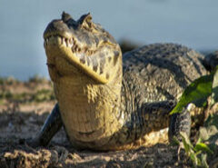

Características

O bioma de Mata Atlãntica possui áreas com clima tropical úmido, também sendo uma floresta pluvial, isso é, recebe grandes quantidades de chuva. No Brasil, o bioma hoje ocupa um total de 7% do território nacional, mas quando comparado ao passado, essa quantia é menos de metade da mata original. A Mata Atlântica está presente em 17 estados, no Sul e Sudeste do Brasil.
Formados por colinas e planícies costeiras, a Mata Atlântica possui uma enorme biodiversidade e, devido ao intenso processo de desmatamento, é o bioma que possui a maior quantidade de espécies em risco de extinção. Sua vegetação é extremamente variada e também pode representar a maior diversidade de árvores por unidade de área do mundo.
Lista de estados
Alagoas, Bahia, Ceará, Goiás, Mato Grosso do Sul, Minas Gerais, Paraíba, Paraná, Pernambuco, Piauí, Sergipe, Rio Grande do Norte, Rio Grande do Sul, São Paulo, Espírito Santo, Rio de Janeiro e Santa Catarina.
Fauna
(Exemplos)
Garça |
Tiê-Sangue |
Tucano |
 |
||
| Também conhecida como ardeidae, ave que vive em bandos e frequentam áreas com rios, lagoas e manguezais, se alimentando principalmente de peixes e sapos. | Uma das aves "símbolo" da mata atlântica, famosa pela beleza de sua plumagem cor sangue. É interessante notar que apenas os machos adultos possuem essa coloração, fêmeas e machos jovens possuem penas de cor parda. | Muito famoso pelo seu bico longo e cores vibrantes, infelizmente também sendo alvos para tráfico de animais. Se alimentam principalmente de frutas e pequenos animais. |
Arara |
Beija-Flor |
Jararaca |
 |
 |
 |
| Ave encontrada em várias partes do Brasil em diversos tipos. Possuem bico grosso e curvo o qual é utilizado para alimentação de frutos e sementes. | Aves pequenas com bicos longos capazes de voo rápido, também sendo as únicas aves capazes de voar para trás ou paradas. O bico de um beija-flor tem seu formato variado de acordo com as flores que constituem sua alimentação. | Serpente de 1 a 1,5 metros de comprimento, com padrão de cores variando de cobra para cobra. São responsáveis por 70% dos acidentes com cobras em todo o país. |
Jacaré-do-Papo-Amarelo |
Traíra |
|  | |
| Assim como outros jacarés possui coloração verde e focinho curto, mas com um papo amarelo, que deu origem ao seu nome. A espécie ja foi ameaçada de extinção mas hoje possui um risco bem menor devido a proibição da caça. | Também conhecido como Lobó, um peixe de escamas com coloração marrom ou preta, possuindo dentes afiados e poderosos. Esta espécie é canibal mas cuida de suas crias até que se espalhem pelo seu habitat. |
Flora
(Características)
A vegetação da mata atlântica é extremamente diversificada, apresentando vegetação rasteira até árvores de grande porte, as principais do bioma. Uma árvore extremamente bem conhecida é nativa deste bioma, o Pau-Brasil, o qual foi préviamente explorado durante a colonização do país.
Araçá |
Bromélias |
Pau-Brasil |
 |